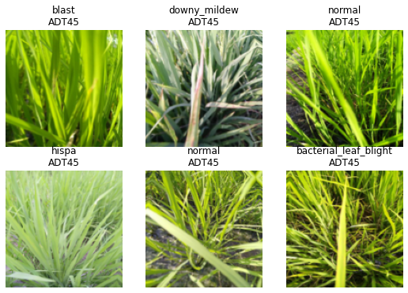
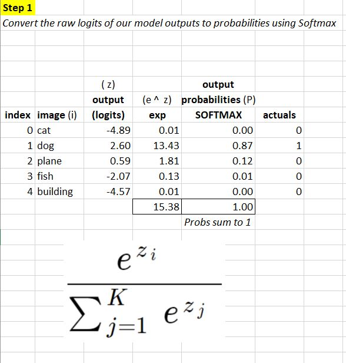
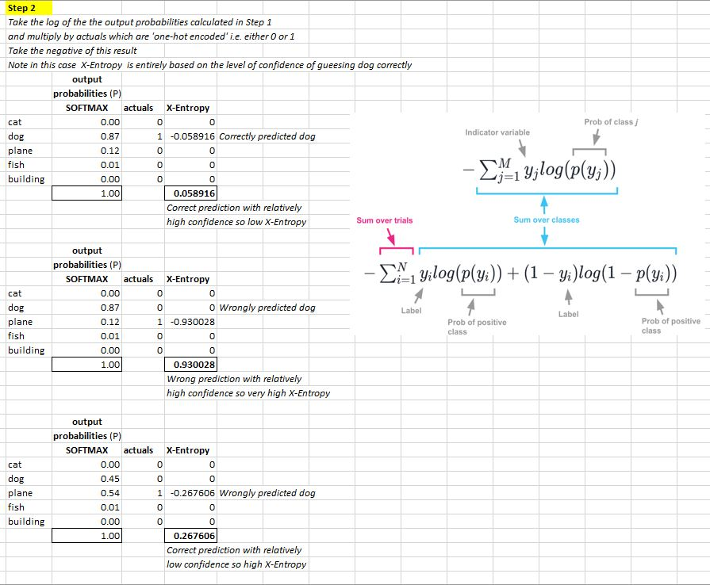

# install fastkaggle if not available
try: import fastkaggle
except ModuleNotFoundError:
!pip install -Uq fastkaggle
from fastkaggle import *This blog further develops the ideas included in the earlier Paddy Dcotor: Paddy Disease Classification blog. We’re going to build a model that doesn’t just predict what disease the rice paddy has, but also predicts what kind of rice is shown. This might sound like a bad idea. After all, doesn’t that mean that the model has more to do? Mightn’t it get rather distracted from its main task, which is to identify paddy disease?
Perhaps… but in some cases the opposite to be true, especially when training for quite a few epochs. By giving the model more signal about what is present in a picture, it may be able to use this information to find more interesting features that predict our target of interest. For instance, perhaps some of the features of disease change between varieties.
Set up
First we’ll repeat the steps we used last time to access the data and ensure all the latest libraries are installed:
::: {.cell _kg_hide-output=‘true’ tags=‘[]’}
!pip install fastai
comp = 'paddy-disease-classification'
path = setup_comp(comp, install='fastai "timm>=0.6.2.dev0"')
from fastai.vision.all import *
set_seed(42)
from fastcore.parallel import *
trn_path = path/'train_images':::
Here’s the CSV that Kaggle provides, showing the variety of rice contained in each image – we’ll make image_id the index of our data frame so that we can look up images directly to grab their variety:
# load in our training dataset - set index as image_id column
df = pd.read_csv(path/'train.csv', index_col='image_id')
df.head()| label | variety | age | |
|---|---|---|---|
| image_id | |||
| 100330.jpg | bacterial_leaf_blight | ADT45 | 45 |
| 100365.jpg | bacterial_leaf_blight | ADT45 | 45 |
| 100382.jpg | bacterial_leaf_blight | ADT45 | 45 |
| 100632.jpg | bacterial_leaf_blight | ADT45 | 45 |
| 101918.jpg | bacterial_leaf_blight | ADT45 | 45 |
Pandas uses the loc attribute to look up rows by index. Here’s how we can get the variety of image 100330.jpg, for instance:
df.loc['100330.jpg', 'variety']'ADT45'Our DataBlock will be using get_image_files to get the list of training images, which returns Path objects. Therefore, to look up an item to get its variety, we’ll need to pass its name. Here’s a function which does just that:
# create a function that looks up an item and gets its variety
def get_variety(p): return df.loc[p.name, 'variety']We’re now ready to create our DataLoaders. To do this, we’ll use the DataBlock API, which is a flexible and convenient way to plug pieces of a data processing pipeline together:
# Create our DataLoaders
dls = DataBlock(
blocks=(ImageBlock,CategoryBlock,CategoryBlock), # these are inputs and outputs - specify which on line below
n_inp=1, # specify number of inputs included above - so first argument above is ImageBlock which is our inputs, and the 2 outputs are CategoryBlocks - disease and variety
get_items=get_image_files, # grab input images
get_y = [parent_label,get_variety], # grab labels - parent_label is disease, get_variety from function we defined earlier
splitter=RandomSplitter(0.2, seed=42), # split training set 80% validation 20%
item_tfms=Resize(192, method='squish'), # image augmentation
batch_tfms=aug_transforms(size=128, min_scale=0.75) # batch augmentation
).dataloaders(trn_path)Here’s an explanation of each line:
blocks=(ImageBlock,CategoryBlock,CategoryBlock),The DataBlock will create 3 things from each file: an image (the contents of the file), and 2 categorical variables (the disease and the variety).
n_inp=1,There is 1 input (the image) – and therefore the other two variables (the two categories) are outputs.
get_items=get_image_files,Use get_image_files to get a list of inputs.
get_y = [parent_label,get_variety],To create the two outputs for each file, call two functions: parent_label (from fastai) and get_variety (defined above).
splitter=RandomSplitter(0.2, seed=42),Randomly split the input into 80% train and 20% validation sets.
item_tfms=Resize(192, method='squish'),
batch_tfms=aug_transforms(size=128, min_scale=0.75)These are the same item and batch transforms we’ve used in previous notebooks.
Let’s take a look at part of a batch of this data:
dls.show_batch(max_n=6)
We can see that fastai has created both the image input and two categorical outputs that we requested!
Replicating the disease model
Now we’ll replicate the same disease model we’ve made before, but have it work with this new data.
The key difference is that our metrics and loss will now receive three things instead of two: the model outputs (i.e. the metric and loss function inputs), and the two targets (disease and variety). Therefore, we need to define slight variations of our metric (error_rate) and loss function (cross_entropy) to pass on just the disease target:
# modify our error function to accomodate two targets
def disease_err(inp,disease,variety): return error_rate(inp,disease)
# modify our loss function to accomodate two targets
def disease_loss(inp,disease,variety): return F.cross_entropy(inp,disease) # cross entropy function is what fastai picked for us when we just had a single outout categoryCross-Entropy
Note that all of the loss functions in PyTorch have two versions. There is a class which you can instantiate passing in various tweaks, and there is also a version that is a function but everyone, including PyTorch official docs refers to this by F.
Let’s take some time out to firm up on Cross-Entropy. To illustrate, let’s use a 5 class classification task where an image is classified as either a cat, dog, plane, fish or building.
The first step is:
- convert raw outputs of our model (which at this stage are just numbers based on inital random weights applied) to
probabilitiesusing theSOFTMAXfunction.
We do this by first taking our raw outputs(z) and calculating e to the power of (z) for each prediction i. We then convert to probabilities by pro-rating the results between 0 and 1 - to give us our probabilities which sum to 1 - as illustrated below:

The second step is:
- calculate Cross-Entropy loss
For the purposes of this example, the rather terrifying looking equation below, can effectively be reduced to simply taking the log of output probabilities:

The mathematical image included above in my screenshotted spreadsheet are taken from Things that confused me about cross-entropy by Chris Said.
We’re now ready to create our learner. There’s just one wrinkle to be aware of. Now that our DataLoaders is returning multiple targets, fastai doesn’t know how many outputs our model will need. Therefore we have to pass n_out when we create our Learner – we need 10 outputs, one for each possible disease:
!pip3 install --upgrade fastai
from fastai.vision.all import vision_learner
!pip install timm
import timm
# replicate our disease model
arch = 'convnext_small_in22k'
learn = vision_learner(dls, arch, loss_func=disease_loss, metrics=disease_err, n_out=10).to_fp16() # note we now have to specify which loss_func to use and number of outputs n_out
lr = 0.01When we train this model we should get similar results to what we’ve seen with similar models before:
# train our model
learn.fine_tune(5, lr)| epoch | train_loss | valid_loss | disease_err | time |
|---|---|---|---|---|
| 0 | 1.234077 | 0.826925 | 0.270062 | 03:03 |
| epoch | train_loss | valid_loss | disease_err | time |
|---|---|---|---|---|
| 0 | 0.603252 | 0.421769 | 0.135031 | 05:13 |
| 1 | 0.470395 | 0.415115 | 0.125420 | 05:12 |
| 2 | 0.303026 | 0.212930 | 0.071120 | 05:13 |
| 3 | 0.179699 | 0.146253 | 0.042287 | 05:13 |
| 4 | 0.142097 | 0.138253 | 0.041326 | 05:13 |
Multi-label classification
In order to predict both the probability of each disease, and of each variety, we’ll now need the model to output a tensor of length 20, since there are 10 possible diseases, and 10 possible varieties. We can do this by setting n_out=20:
# set model outputs to 20 - 10 diseases and 10 varieties
learn = vision_learner(dls, arch, n_out=20).to_fp16()We can define disease_loss just like we did previously, but with one important change: the input tensor is now length 20, not 10, so it doesn’t match the number of possible diseases. We can pick whatever part of the input we want to be used to predict disease. Let’s use the first 10 values:
# we need to specify which part of inputs are for use in disease loss function
def disease_loss(inp,disease,variety): return F.cross_entropy(inp[:,:10],disease)That means we can do the same thing for predicting variety, but use the last 10 values of the input, and set the target to variety instead of disease:
# we need to specify which part of inputs are for use in variety loss function
def variety_loss(inp,disease,variety): return F.cross_entropy(inp[:,10:],variety)Our overall loss will then be the sum of these two losses:
# overall loss - just add together loss functions for disease and variety
def combine_loss(inp,disease,variety): return disease_loss(inp,disease,variety)+variety_loss(inp,disease,variety)It would be useful to view the error rate for each of the outputs too, so let’s do the same thing for out metrics:
# function to include the error_rate for disease
def disease_err(inp,disease,variety): return error_rate(inp[:,:10],disease)
# function to include the error_rate for disease
def variety_err(inp,disease,variety): return error_rate(inp[:,10:],variety)
# combine disease error and variety error within variable err_metrics
err_metrics = (disease_err,variety_err)It’s useful to see the loss for each of the outputs too, so we’ll add those as metrics:
# combine error metrics and loss metrics within variable all_metrics
all_metrics = err_metrics+(disease_loss,variety_loss)We’re now ready to create and train our Learner:
# pulling it all together into our Learner
learn = vision_learner(dls, arch, loss_func=combine_loss, metrics=all_metrics, n_out=20).to_fp16()# train the model
learn.fine_tune(5, lr)| epoch | train_loss | valid_loss | disease_err | variety_err | disease_loss | variety_loss | time |
|---|---|---|---|---|---|---|---|
| 0 | 2.286528 | 1.215683 | 0.265257 | 0.113407 | 0.845696 | 0.369987 | 03:09 |
| epoch | train_loss | valid_loss | disease_err | variety_err | disease_loss | variety_loss | time |
|---|---|---|---|---|---|---|---|
| 0 | 1.015679 | 0.607585 | 0.133109 | 0.062951 | 0.421834 | 0.185751 | 05:13 |
| 1 | 0.745607 | 0.412463 | 0.087938 | 0.043729 | 0.286902 | 0.125561 | 05:14 |
| 2 | 0.483214 | 0.263229 | 0.058626 | 0.025949 | 0.179259 | 0.083970 | 05:14 |
| 3 | 0.282286 | 0.204188 | 0.047093 | 0.017299 | 0.154198 | 0.049990 | 05:13 |
| 4 | 0.202148 | 0.174338 | 0.043248 | 0.013455 | 0.133468 | 0.040870 | 05:13 |
Key takeaways
So, is this useful?
Well… if we actually want a model that predicts multiple things, then yes, definitely! But as to whether it’s going to help us better predict rice disease, that is unknown. I haven’t come across any research that tackles this important question: when can a multi-target model improve the accuracy of the individual targets compared to a single target model? (That doesn’t mean it doesn’t exist of course – perhaps it does and I haven’t found it yet…)
Jeremy found that in previous projects there are cases where improvements to single targets can be made by using a multi-target model. It’ll be most useful when we’re having problems with overfitting and so try doing this with more epochs.